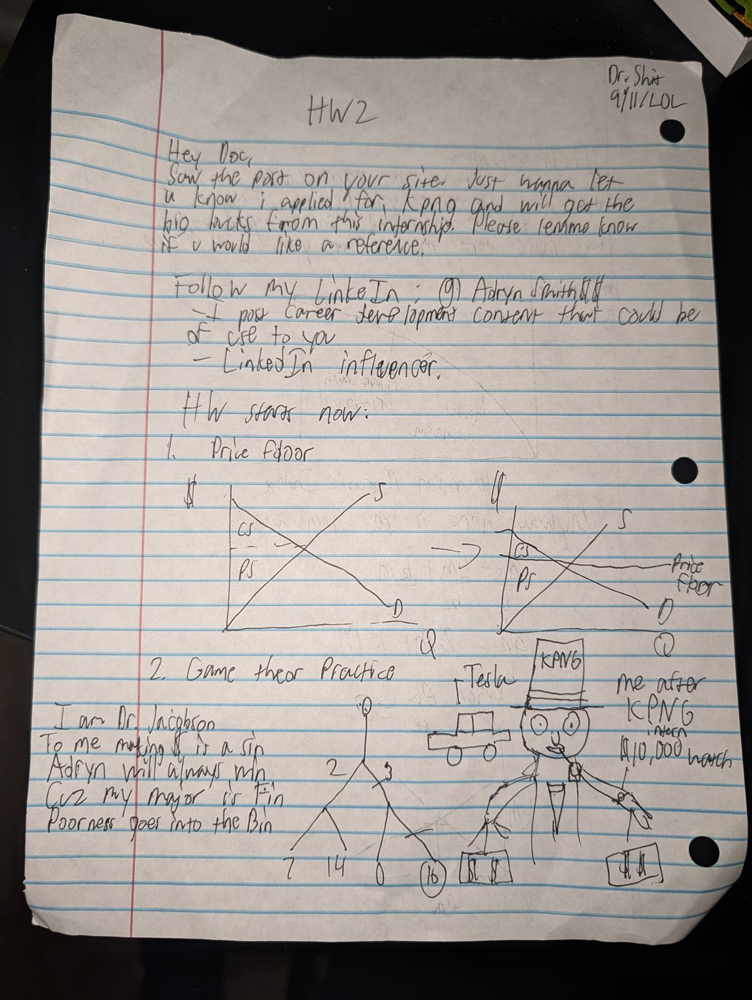

Scholarly Articles / No. 004
Article No. 004 · Peer Review Division · Second Round
Desk Rejection of a Manuscript Entitled “HW2”
The Journal of Jacobson Studies
Office of the Editor-in-Chief, Managing Editor, and Sole Referee (same office)
1. Editorial Preamble
The author has cited this Journal (“saw the post on your site”), making them, by citation count, my most engaged reader. The manuscript opens by addressing me under a name I do not hold, dated in a format that ends in “LOL.” The Journal notes that the author cannot yet be trusted with either of the two fields at the top of a page and proceeds, with lowered expectations, to the content.
Salutation docked one letter grade. The date docked another. You began this paper at a C. —PJ2. Career Announcements (Unrefereed)
- The internship. The author reports applying to “KPNG,” an entity unknown to the Big Four, the Big Three, or the alphabet. If the author means KPMG, the application materials presumably spell it the same way, in which case the author's confidence in “big bucks” is the only thing in this manuscript not at risk of being accepted.
- The reference. The author writes, verbatim, “please lemme know if u would like a reference.” As drafted, the author is offering to serve as a reference for me. I accept. Kindly inform KPNG that I am diligent, punctual, and the author's professor, a fact the author may wish to reflect on before listing me in return.
- The LinkedIn. The author invites me to follow “@AdrynSmith$$,” where they post “career development content that could be of use to you.” The Journal reminds the author that tenure is the original passive income and declines to engage with the platform where finance majors go to congratulate each other for commuting.
3. The Exhibit
The homework proper — the author announces “HW starts now,” a sentence that doubles as a warning — is reproduced below, unretouched, for the permanent record.

4. Review of the Technical Content (Both of It)
- Question 1, “Price floor.” The author draws a price floor below the market equilibrium. A floor set below equilibrium is non-binding: the market clears above it and precisely nothing happens, which does make this the rare graph in the author's oeuvre whose predictions are correct. The consumer and producer surplus labels are carried over from the first panel unchanged — accurate here only by accident, since a floor that binds would transfer surplus to sellers and produce a deadweight loss the author has never drawn nor, on the evidence, met. Full marks for supply sloping up. That is the full extent of the full marks.
- Question 2, “Game theor Practice.” The author presents a game tree with no players, no strategies, and no indication of who moves at which node, then circles the payoff “16” — the largest number on the page. This is not backward induction; it is shopping. In an actual extensive-form game the solution is found by working from the terminal nodes up, anticipating each player's best response, not by awarding the pot to whoever the artist likes. The tree also appears to double as a stick figure, which at least gives one of the two players a face.
-
The verse. The manuscript includes a five-line poem,
reproduced here under fair use, as no one would pay for it:
I am Dr. JacobsonThe Journal notes that the poem is written in my voice for two lines and the author's for three, a point-of-view error that would concern me more if either voice scanned. “Jacobson” does not rhyme with “sin.” The author's major does not rhyme with solvency.
To me making $ is a sin
Adryn will always win
Cuz my major is Fin
Poorness goes into the Bin - The illustration. The manuscript closes with the author rendered post-KPNG: top hat, monocle, Tesla, and an annotated “$10,000 watch.” The Journal observes that the author has drawn the compensation package of a managing partner and labeled it “intern.” This is the largest forecasting error in the document, and the document contains a price floor drawn underwater.
5. Verdict
The grade of F+ is recorded above. The author should not mistake this for grade inflation: it is one increment above the prior submission's F−, and at this rate of convergence the author will reach a passing grade shortly after tenure review — mine, not theirs, as only one of us is on that track. The manuscript is rejected at the desk, the desk having read quite enough. Office hours remain Tuesdays, 2:00–2:15 PM, where we will cover binding price floors, backward induction, and the spelling of accounting firms, in whatever order time permits, which is to say one of them.
Growth rate noted: F− to F+ in one semester. See me before you annualize it. —PJ